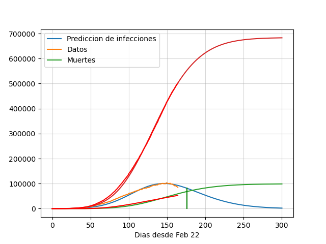
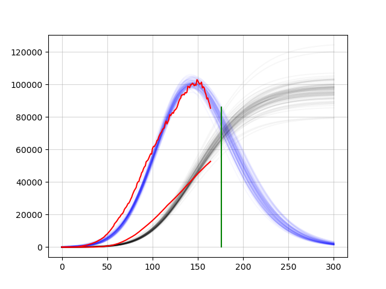
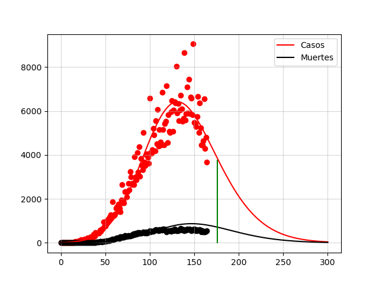

Predicción de infecciones y muertes
Lo que pretendo con este ejercicio es generar consciencia sobre el virus CoVid19 y el riesgo real de muerte que representa para muchas personas. Hay que tomarlo en serio y evitar lo más posible caer en el riesgo de contagiarse y contagiar a nuestros seres queridos.
El modelo utiliza los datos oficiales del coronavirus en México actualizados hasta el 27 de Junio.
El código puede ser revisado aquí.

Es extraño hablar de volver a la nueva normalidad y terminar la jornada de sana distancia cuando nos encontramos en el pico de una epidemia como la que se está viviendo en el mundo. Pareciera el peor momento para relajar las recomendaciones en cuanto a protección contra el masivo contagio de ese enemigo invisible. Y es verdad, al ser una amenaza invisible cuesta trabajo mantener la disciplina y decidir no jugarse el destino y exponerse a ser contagiado o inadvertidamente contagiar a otras personas, y dado que este es un virus bastante contagioso, al llegar a la enorme cantidad de gente a la que puede llegar, se traduciría en una terrible cantidad de decesos.
Las epidemias son fenómenos que tienen comportamientos más o menos predecibles que se pueden modelar con ecuaciones matemáticas que nos dan un cierto nivel de confianza sobre lo que va a suceder. Claro, estos modelos están influenciados en gran manera por el comportamiento de la gente y las medidas tomadas por el gobierno para lograr limitar el número de contagios y así evitar saturar los sistemas de salud, puesto que, entre otras cosas, la probabilidad de muerte depende directamente de tener sistemas de salud capaces de responder y atender a los enfermos más graves.
El modelo aquí utilizado está basado en la publicación de los científicos italianos Aldo Ianni y Nicola Rossi, pertenecientes al Instituto Nacional de Física Nuclear, en la que toman los datos de contagios de coronavirus en Italia y España y encuentran que este modelo es el mejor candidato para describir el comportamiento de la epidemia. En nuestra gráfica, hemos adaptado el modelo a los datos reales de México, y podemos ver en color rojo éstos datos reales de casos de coronavirus en nuestro país, tomados directamente de la página dedicada por el gobierno de México para informar sobre la situación local de la epidemia. La curva roja muestra el número de casos totales confirmados; la curva azul muestra, de los casos confirmados, cuántos siguen siendo activos; y la curva verde muestra el número de muertos. Cada una de estas tres curvas tiene sobrepuesta la curva de datos reales, con lo que se puede apreciar cómo el modelo se ajusta a los datos notablemente. La barra vertical nos muestra dónde nos encontramos el día de hoy.
Éstos modelos normalmente se presentan con un único escenario posible, y ese es el ajuste al modelo que presenta el error más bajo con respecto a los datos actuales, sin embargo, hay una cantidad considerable de posibles futuros que también se ajustan a los datos actuales y eso podemos verlo en la gráfica de abajo. Las curvas azules nos muestran el mismo modelo expresado en distintos parámetros, donde se puede ver que a partir de la situación actual, se puede llegar a un número de escenarios distintos en cuanto a la cantidad de casos confirmados. Las líneas negras describen el número de personas fallecidas acumuladas, que nos muestra también un número considerable de posibles futuros, entre los que las vidas de posiblemente 60 mil personas están en juego.

En la siguiente gráfica podemos ver cómo el modelo describe el número de casos nuevos diarios y muertos nuevos, de la que en caso de seguir con las medidads de distanciamiento social, estaríamos pasando ahora por el máximo, poco menos de 600 muertos en un día, y de nosotros depende que ese número no aumente.

Los puntos son los datos reales y las curvas son lo que el modelo nos dice de cómo se comportará la epidemia. El eje horizontal nos dice cuántos días han pasado desde el comienzo de la epidemia el 22 de Febrero. Así, podemos ver que el día de máximo número de contagios se dio a los 100 días del comienzo de la epidemia, es decir el 3 de Junio, sin embargo, esto no significa que el riesgo hoy es menor.
Hay que entender que en realidad el riesgo máximo de contagio se da estos días, cuando el número de personas infectadas está en su punto máximo, y esto se entiende fácilmente dado que entre más enfermos hay, más probable es encontrarse con uno en la calle y terminar uno mismo contagiado. ¿Entonces por qué el número máximo de contagios sucedió hace dos semanas? La razón es que el número de contagios nuevos depende tanto del número de personas infectadas actualmente, como del número de personas susceptibles, y si este último es bajo dado que el resto ya se infectó, los contagios nuevos comienzan a reducirse. Ahora, ¿qué pasa si nos confiamos y comenzamos a salir a la calle pensando que el riesgo ya pasó? Pues aumenta nuevamente la cantidad de personas susceptibles y por lo tanto el número de nuevos contagios.
Los científicos italianos concluyen su artículo diciendo que la inatención y el poco cuidado de las comunidades y gobiernos incremetará invariablemente el número de personas susceptibles, exponiendo a más gente a la infección, lo que traerá como consecuencia un esparcimiento descontrolado de la epidemia, llegando a una gran parte de la población del país, contando decenas de millones de casos, por lo que es extremadamente importante mantener las medidas de seguridad y distancia.
El modelo toma en cuenta cuatro variables y la primera de ellas es el número de personas susceptibles a enfermarse. Es importante entender que este número, aunque podría pensarse que es igual a la población total del país, el valor real es mucho más bajo puesto que se han tomado medidas para reducirlo, entre ellas, quedarse en casa. Quedarse en casa es la mejor manera de no ser parte del grupo de susceptibles y por tanto, la mejor manera de mantener el número de infectados bajo. La segunda variable es esa, el número de infectados activos, y se calcula a partir del número de infectados diarios. La tercera y cuarta variables son el número acumulado de muertes y el de recuperados y también se calculan a partir de cuántos hay cada día.